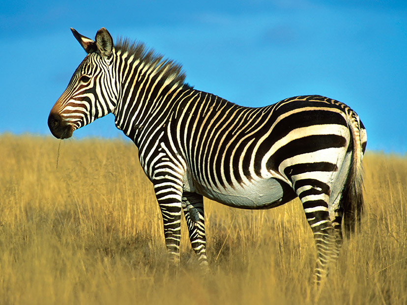
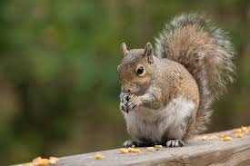
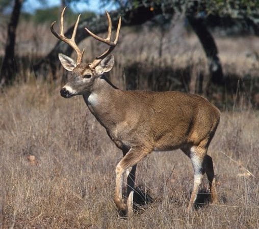

Los perros son animales mamíferos y, aunque cada raza puede tener diferentes características y habilidades, la mayoría de los perros tienen dientes grandes y fuertes, lo que les permite comer diferentes tipos de alimentos y adquirir unos músculos fuertes y habilidades importantes para su supervivencia, como correr rápido o saltar. Los perros viven en muchos hábitats, incluyendo praderas, desiertos, pastizales, bosques, selvas tropicales, regiones costeras y zonas árticas. Los perros son muy adaptables, aunque algunos han evolucionado para entornos específicos, como las razas que desarrollaron abrigos pesados para soportar climas helados. En la naturaleza un perro se alimenta fundamentalmente de carne, es su mayor fuente de energía y de aportación de proteínas. Pero también complementa este alimento con frutas, hortalizas o pescado. Aunque hablamos de un animal cazador, el perro no tiene problema a la hora de comer comida encontrada por azar en su camino
Características
- Ser muy afectuosos con los humanos.
- Tener un sentido del olfato muy agudo.
- Tener un amplio espectro auditivo.
- Ser capaces de detectar el movimiento y la luz a la distancia
- Tener una piel externa que se renueva de manera periódica.
MENU

Tienen una flexibilidad y agilidad impresionante, pueden saltar desde más de 3 metros de altura. Los gatos pueden rotar sus orejas 180 grados. Los gatos pueden pasar hasta 14 horas dormidos. Debido a su naturaleza nocturna, los gatos suelen ser mucho más hiperactivos en la tarde. Los gatos pueden vivir en las casas de las personas o en total libertad, siendo este último caso muy típico de las grandes ciudades, donde pueden verse con facilidad bastantes gatos callejeros. En consecuencia, los gatos pueden vivir debajo de los arbustos, en agujeros o soportales de edificios, en graneros, en callejones Mientras que su dieta original para gatos se basaba predominantemente en carne cruda, ahora aboga por la cocción parcial de los trozos de pollo para reducir la posibilidad de contaminación bacteriana
Características
- Ser muy afectuosos con los humanos.
- Tener un sentido del olfato muy agudo.
- Tener un amplio espectro auditivo.
- Ser capaces de detectar el movimiento y la luz a la distancia
- Tener una piel externa que se renueva de manera periódica.
MENU

Las cebras principalmente están en África en cambio, dependiendo del tipo de cebra del que estemos hablando, éstas se ubicarán en un espacio u otro de la sabana. Las cebras se distinguen entre Cebra de Grevy, Cebra de Montaña y Cebra Común.La cebra es el único équido que habita de manera natural en estos climas tropicales, por lo que es con diferencia el más expuesto a estos parásitos. Las cebras son mamíferos exclusivamente herbívoros que comen sobre todo por la mañana y por la tarde, reponiendo al mediodía. Son animales que se alimentan de hierba tosca, hojas y brotes.
Características
- Tienen una excelente visión que le dan un gran amplio campo de visión.
- Son animales robustos que pueden medir hasta 2,5 metros y 1,5 metros de alto y puede llegar a pesar hasta 400 kilos.
- Su cabeza es grande, sus patas son muy cortas en relación con el cuerpo, el cuello es gordo y musculoso.
- Se sabe que el color de las cebras es negro con rayas blancas y no al revés, puesto que las pruebas hechas en los embriones demuestran que el color de fondo es oscuro.
- Las cebras solo se consideran especies salvajes que se crían en un hábitat libre y bastante distinto.

Las ardillas son mamíferos roedores de la familia Sciuridae, que también incluye a los perritos de la pradera y las marmotas, entre otros grupos de esciúrudos. Las ardillas se distribuyen naturalmente en gran parte del mundo excepto en la Antártida, por supuesto y, en ciertas regiones como Australia, Groenlandia, Madagascar, el sur de Sudamérica y las regiones desérticas. Todas las excepciones corresponden a zonas de climas muy fríos o muy calientes. Las ardillas son omnívoras y pueden comer prácticamente de todo, pero la base de su dieta se compone de semillas, frutos secos y vegetales. Además, de vez en cuando se alimentan de pequeños animales y de los huevos de algunas aves.
Características
- Una de las especies más grandes es la ardilla malabar (Ratufa indica), de unos 36 centímetros de longitud y 2 kilogramos de peso.
- El pelaje de las especies tiende a ser beige, marrón a marrón rojizo y gris. Generalmente, la zona inferior del cuerpo es más clara que la superior.
- Las ardillas listadas tienen franjas longitudinales a lo largo de la espalda que pueden llegar hasta el rostro, estas usualmente son de color negro, blanco o gris.
- En cuestión de tamaño, el rango es amplio. La más pequeña del mundo es la ardilla pigmea africana (Myosciurus pumilio), que mide 60-75 milímetros de longitud cabeza-cuerpo y pesa alrededor de 16.5 gramos.
- Normalmente, las ardillas terrestres son más grandes que las arborícolas; por ejemplo, la marmota alpina llega a medir 54 centímetros de longitud y pesar hasta 8 kilogramos.
MENU

Los venados son de patas extensas y delgadas, con dos pezuñas en cada una. Su cabeza es larga y fina, parecida a la de los caballos. Sus orejas están formadas por muchos músculos, por lo que pueden moverlas sin tener que girar la cabeza o el cuerpo. El venado es un mamífero capaz de sobrevivir en bosques deciduos y semideciduos, como es el caso del “ Caramerudo ”. Este tipo de ejemplar se puede conseguir en el Centro de América, Estados Unidos, así como el Norte de Canadá y Sudamérica, pasando incluso por la Cordillera Andina hasta el oeste de Bolivia. Todas las especies de venados son herbívoras, lo que significa que sólo se alimentan de hierba y plantas, no consumen ningún tipo de carne. Son muy oportunistas cuando se trata de comer, por lo que se alimentan de todo lo que puedan encontrar en su camino. Algunos de los alimentos más comunes son la hierba, plantas, hojas, raíces y tallos.
Características
- Su altura es de aproximadamente 1,20 metros (las astas no entran en esta medición).
- La pérdida de cuernos ocurre normalmente entre febrero y abril y dura algunas horas, comenzando a crecer las nuevas astas de inmediato, durando su desarrollo alrededor de 4 meses.
- Tanto los individuos de sexo masculino como los individuos de sexo femenino efectúan el cambio de pelaje con el paso de estación, siendo así, el venado presenta pelo rojizo durante el verano y castaño oscuro en el invierno.
- Las crías presentan manchas dorsales blancas hasta los 2 meses de edad, que favorecen al camuflaje en la vegetación.
- La cola es corta, amarronada y sin tonos de color negro.